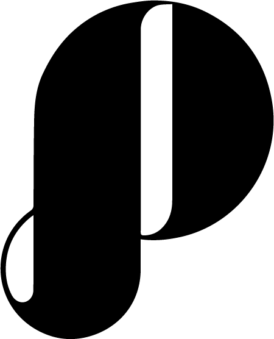

Graphic design
I love to design stuff! I've made logos through freelancing and y'know, just for myself too.
Check out my other work on Behance! Or email me. Or send a pigeon.
While I worked at Purpose Social, I designed the logo for the company! It was a great experience and I learned so much from it. Check the logo out below or check it out live now!
